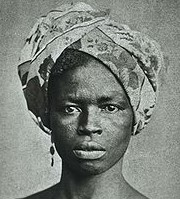

A Heroína Negra da Independência
Maria Felipa de Oliveira, nascida na Ilha de Itaparica em 04/07/1873 foi marisqueira, pescadora e trabalhadora braçal. Junto a Maria Quitéria e Joana Angélica, participou da luta da Independência da Bahia. Era descendente de negros escravizados, vindos do Sudão.
Maria Felipa viveu na Ponta das Baleias, no Convento, casarão que tinha esse nome “porque abrigava [...] os que só tinham de seu o sol e a lua”
Sua História
Maria Felipa liderou um grupo de 200 pessoas, entre mulheres negras, índios tupinambás e tapuias nas batalhas contra os portugueses que atacavam a Ilha de Itaparica, a partir de 1822. Somente o grupo de Maria Felipa foi o responsável por ter queimado 40 embarcações portuguesas que estavam próximas à Ilha.
Em 26 de julho de 2018 foi declarada Heroína da Pátria Brasileira pela Lei Federal nº 13.697, tendo seu nome inscrito no "Livro dos Heróis e Heroínas da Pátria", que se encontra no "Panteão da Pátria e da Liberdade Tancredo Neves", situado em Brasília, Distrito Federal.


Ingrid Pitta é Arquiteta e Urbanista, Ux Designer e futura Desenvolvedora Front-end participante da turma 7 da {Reprograma}. Adoro modelagem 3D, documentários e ouvir músicas estranhas ao patinar. O senso de humor aqui é volátil, além de nunca dar match com a expressão facial.